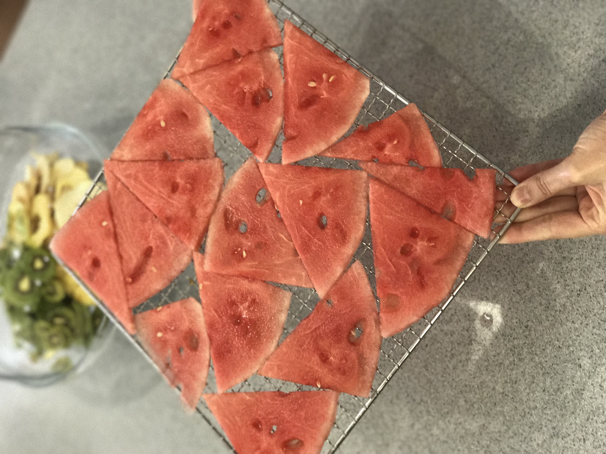

Арбуз. Полезные свойства.
В мякоти арбуза содержится клетчатка, пектины, гемицеллюлоза, витамин В1, В2, С, РР, фолиевая кислота, провитамина А, каротин, марганец, никель, железо, магний и калий, от 5 -11% легкоусвояемых сахаров, а так же немного аскорбиновой кислоты, каротина, совсем немного тиамина, рибофлавина и никотиновой кислоты. Мякоть арбуза богата и органическими кислотами, хорошо стимулирующими пищеварительные и обменные процессы.
Калорийность арбуза в сыром виде – всего 25 кКал на 100 г.